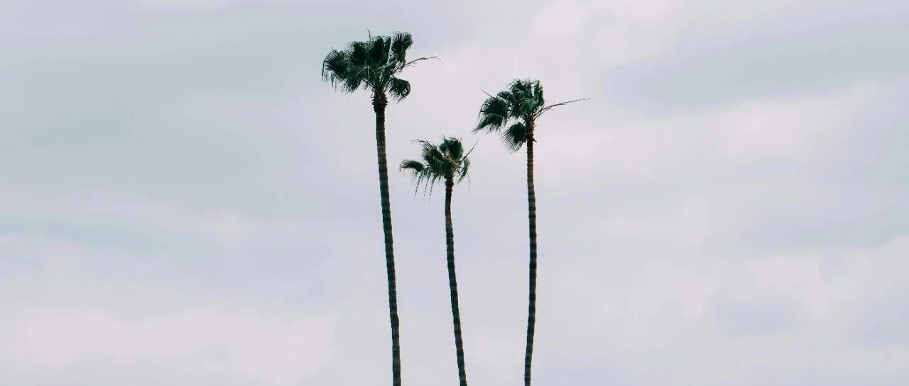

路径依赖~
这两个月，腾讯涨得还不错，我没动；仓里大A仅剩的独苗茅台，也在1700左右波动，我也没动。
这两只准备等分红派息后再看情况，目前我的持仓成本很低，腾讯70多，茅台负成本。
大饼这些日子在6.5万刀左右来回跳，今天我出了一小部分，现在也进入负成本阶段；二饼全部清空，没赚多少钱，微利。
沪铜和伦铜没动，目前沪铜在79500左右震荡（我成本69940），所以可能会较长时间持有，直到美联储降息后再看情况。
美股我持有的几只股这段时间比较震荡，其中下跌的有两只：苹果从2月份的192落到了169；特斯拉从去年12月底265一路向下，来到了目前的162（还是昨天涨了12%的情况下）。
特斯拉这一波下跌，让我持有特斯拉的账面盈利直接回吐了五分二，蒸发掉约750-800万美刀，目前特斯拉在我账面上的浮盈总额排名已滑落到第四位：

这一年半，马斯克的负面和骚操作太多，FSD又迟迟无法落地，鸽了五年，这种画饼式的利好，时间长了资本市场可不买账。
加上现在又面临国产电车挖空心思般地抢市场份额，特斯拉的压力也不是一般大。我就先按兵不动，短时间内不卖出，也不会买入。
英伟达上攻到824后，昨天的交易日又滑落到796，整体也是处于震荡期，我815出仓了一小部分，目前英伟达负成本，后续没什么大的意外，就不打算卖了，看情况再说。
昨天有位读者后台给我留言，我们交流了一会。

这位读者的问题，类似于“淹死的都是会游泳的人”，在较熟悉的环境和市场，用熟悉的方式去应对，结果被市场捶爆了。
我其实也犯这样的错，典型如去春节前清仓的中国平安，总共亏了约420，怎么亏的呢？：
以前买龙头股，本着“要么第一，要么唯一”的原则，就买入宁德时代、中国中免（我买的时候还叫中国国旅）、茅台、平安等，以及后来在美股上市的贝壳找房。
前面的几只侥幸盈利，平安遇上了房地产企业频频暴雷，特别是华夏幸福。然后平安就一路往下，越跌我越买，总想抄底，摊低成本嘛。
结果成本是从65降到50左右了，但仓位却越来越重，要命的是，平安还一路跌。
最终我实在忍不了这货，就在38出头割了它，嗯，几乎是割在了最低点。
很多买万科股、恒大、碧桂园股票的从业者也如此，看到它们大跌了，总觉得会回涨的，于是兴致冲冲进去抄底，然后就抄在脖子上，直接被埋了。
年初清仓的贝壳找房，有了平安的前车之鉴，我就没再继续抄底，而是不断做T，一点点搞，最后还是亏了不少，割肉离场。此后，我不会再碰中概股。
说到房子上，其实也一样：这两年的房价下跌，业主从一开始抱着“还会再涨回来的心态”，到“尽量少亏就是赚”，再到现在“能卖掉就是解套”。
而鼓吹房价会涨的中介和自媒体，也从“大放水，必涨”，到“新增供应量大减，必涨”...然后房价从10万元/㎡，涨到了5万元/㎡，还在继续往下涨...然而他们还是只能硬着头皮说会涨。
害死我们的，往往是对过往的思维定势，因为过往曾因此成功过，就认为未来必定还是会复制过往的路径，然后“刻舟求剑”，结果直接被埋，这就是“淹死的都是会游泳的”。
最终要破碎的，都是你的自我限制，是那些你信以为真、把自己捆绑的信念。每当你预设了什么是正确的，就聆听不到真实的答案了。
而所谓成长，就是一边披荆斩棘前行，一边不断破碎这些路径依赖。
就这样吧，准备前往去京都走走，有空会多写写，谢谢大家~